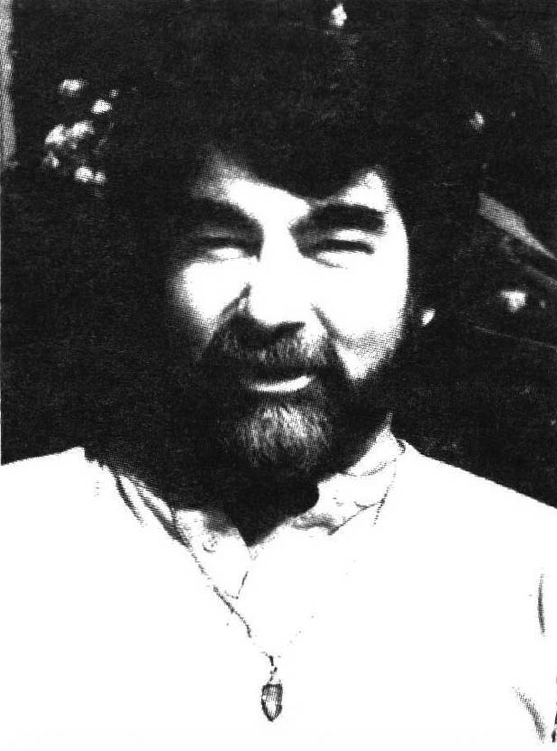

Those who know Bob Trowbridge tend to see him as an easygoing teddy bear of a man with a quick wit and strong sense of humor as well as a warm and accepting nature. His insight and wisdom make him a popular speaker and dreamworker.
Until dreamwork came along I didn't have much direction in my life. I never knew what I wanted to be when I grew up. I told people I wanted to be a bum; but not poor. When I went before a committee of ministers and laypeople to determine my readiness to enter seminary and the ministry, someone asked me why I wanted to become a minister. I said, "It beats getting an honest job."
I have had life-long dream recall, went through a period of pretty impressive nightmares (witches) and have had spontaneous lucid dreams at least since young adulthood. In high school I read a lot of religious material and in college plenty for my psychology degree. It was all grist for the mill but didn't make my direction really clear.
In 1976, while reading something from Edgar Cayce, I had this incredible mental explosion of very high energy that stayed with me for weeks. I was reading his ideas on the physiology of dreams and I started making all these connections between different dream ideas that were floating around in my head. I wrote down about a dozen theories pertaining to the electrical/chemical aspect of dreaming.
At about the same time, I began reading Seth's ideas about dreams, and it was like coming home. I kept having little precognitive dreams about the material I would read in Seth the next day.
VOICE OF A DREAM EXPERT
While walking down the street in San Rafael, I heard a voice in my head say, "You're an expert on dreams." Now that was a totally foreign thought to me - something I did not rationally believe to be true. I knew a lot about dreams and was working with my own, but certainly did not consider myself to be an expert. But that thought, added to the energy I was experiencing, gave me the impetus to put a flyer together and offer a dream class. I had never even taken a dream class! I got two people to sign up, padded the class with friends and launched my dreamworker career.
Then I heard a woman on the radio being interviewed about Seth so I wrote the station and suggested that they have a program on dreams and that I be the guest. I thought I might hear from them in a couple of months or never. I sent the letter on Friday. On Monday I had an upset stomachache that continued into Tuesday. I couldn't find any explanation for the queasiness and generalized anxiety I was feeling. Wednesday morning the station called, said they had a cancellation and could I come on the show that night? That was precognitive anxiety!
There I was in the middle of my first dream class with my friends and I go on the radio as a dream expert! Well, I was absolutely calm, professional and brilliant on the show. I didn't even use my notes. From that point on, whenever the interviewer, Don Chamberlin, wanted a dream person on his show, it was me. Every four to six weeks I'd go on for one to three hours and take calls from people about their dreams. It was very popular. Then the newspaper got interested and I was interviewed twice within my first year of dreamwork.
I came to dreamwork with a kind of ignorance and innocence which was a real boon to me because I didn't have a preconceived notion of what was or wasn't possible. I just did things and people picked up how simple it was.
Nowadays I do visualization work which is very powerful. It's a way for people to bring up symbols on the spot - a waking dream. I lead a channeling group, do regression workshops and with Steve Marks offer seminars for nurses under the banner of Healing Arts Associates.
I have been editing The Men's Journal for the past three years and, of course, have recently taken on editing DNB with Linda. I had always been a loner and done things on my own. Now I'm really enjoying connecting with people through these publications and through my involvement with the Bay Area Dreamworkers Network. It's great to learn about so many different and exciting methods of dreamwork!
WAKING UP TO THE POSITIVE
I usually do my own dreamwork and meditation while walking, since I get restless trying to sit still.
My feeling about the significance of dreams is that there are two things that need to happen for us to move into our fullest selves. One is dream lucidity and the other is waking lucidity. Dream lucidity or out-of-body experiences, states that I think are very similar, mean more consciously creating what we want and confronting the things that stand in our way. Lucidity in the waking state means bringing our dreaming consciousness into our waking life. It is tantalizingly possible that some of the things we're capable of accomplishing in the dream state could be accomplished in the waking state - if we are lucid. It means waking up to who we are.
Dream lucidity and OBEs allow us to explore just about anything that we want. We can use lucidity to talk to our dream guides face to face. We can explore the past to see if there are places where our energy is blocked. We can explore the future to check out probabilities and choose which ones we would like to activate. We can simply use the dream state to try to move into our own most positive selves, to generate and embrace our positive images. We are willing to look at the negative images in our dreams and struggle with and confront our shadows, but we are less willing to accept positive images as parts of ourselves. Part of dreamwork in the future is to pay attention to the positive images in dreams. They are there to stretch and expand us, to expose us to our greater selves.
My goal is to close that gap between who I am able to act out at this point and who I really am and know myself to be. I realize that there is a cleansing and a healing involved and an incredible letting go of past and future. And I must die to my old self in order to move into that new self, all of which is scary. I had a dream about this:
My spirit guide, Doug (don't laugh; I know of one named Ted), is wearing a suit, looking successful and driving a big dark Cadillac convertible. The road goes to a wire mesh fence and beyond into a vineyard. But there is no gate. Doug just magically drives through the fence. I walk up to it intending to pass through as well. But I bump into the fence. There are two families, one good and one bad. The father of the good family explains to me that Doug is a Wizard which is why he can drive through. I reply, sadly, "I'm a Wizard too."
I am a Wizard, and I am a Wizard after the fashion of the Wizard of Oz. And what is the significance of the Wizard of Oz? He was a humbug, a phony. The Wizard of Oz could not give anything to the seekers that they didn't already have. A good Wizard can help individuals to see and accept what they already have and a good Wizard can give individuals symbols or, better yet, let them find their own, to represent what they already have, what they already know, who they already are.